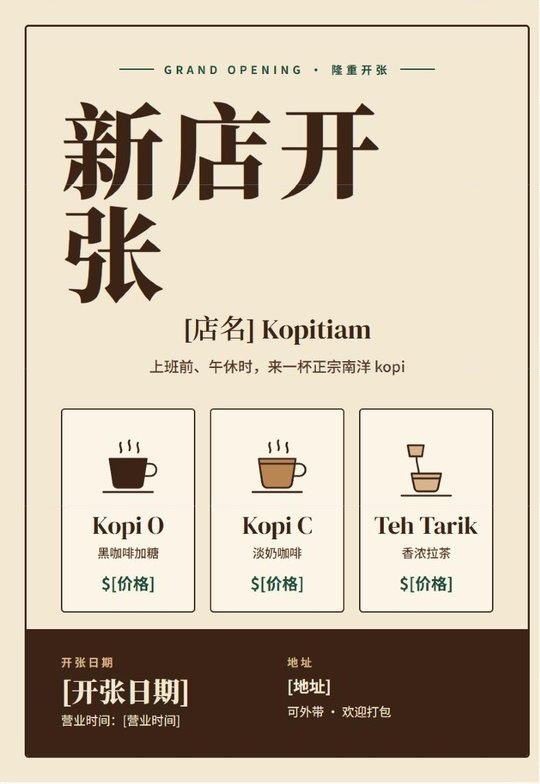
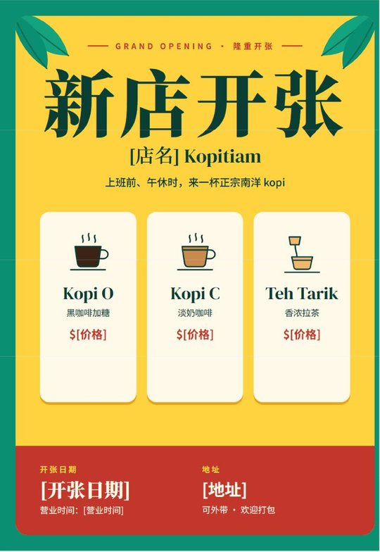
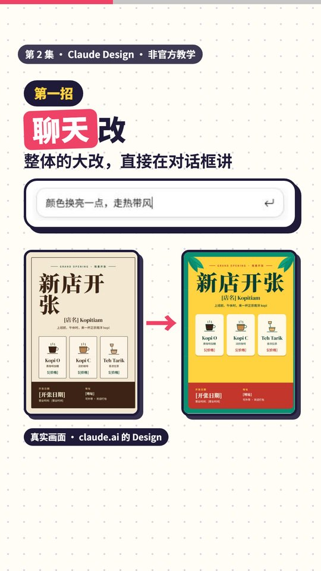
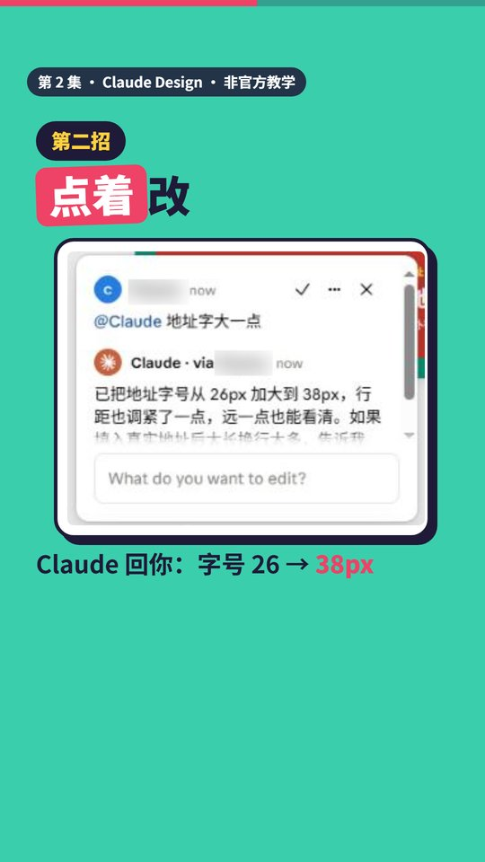
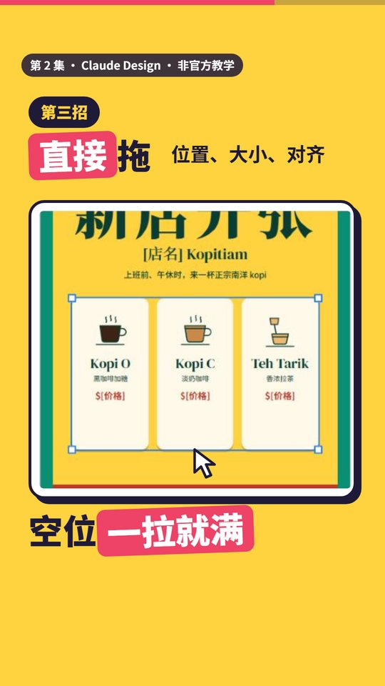
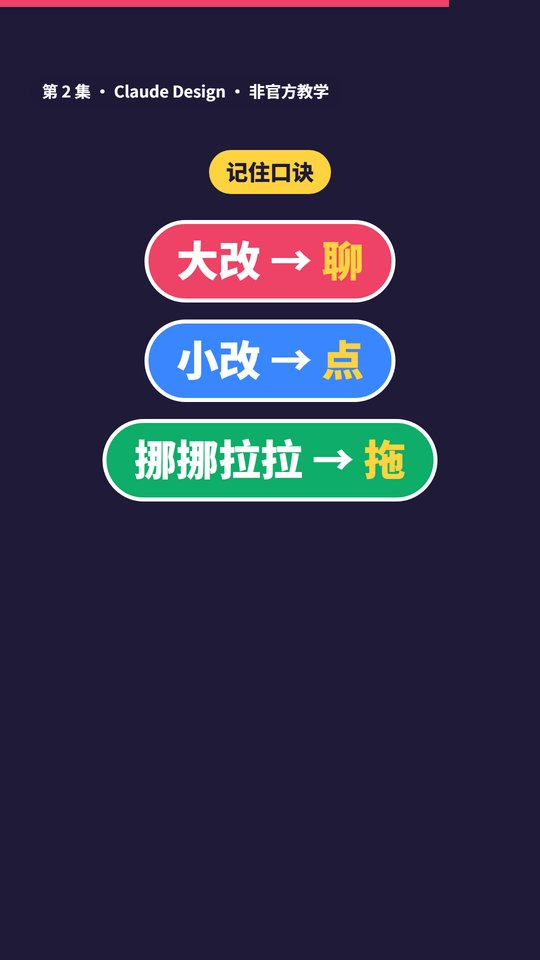

第 2 集 · Claude Design 三种改法
一句话： 第一版不满意，别重做。大改用聊，小改用点，挪挪拉拉就拖。
对照官方文档和真实界面核对日期：2026-11-12 ｜ 时长 41 秒 ｜ 非官方教学
先看结果
下面是在 claude.ai 里实际做的一张 kopi 店海报，用的是第 1 集那句提示词。左边是第一版，右边是用三招改过的版本。


三招
第一招：聊天改（视频 00:08）
影响整张的大改，直接在 Design 旁边的对话框里讲。比如配色、风格、重新排版、加一个区块。
例子：颜色换亮一点，走热带风。Claude 把整张换成芒果黄底、雨林绿边，还加了棕榈叶。

第二招：点着改（视频 00:15）
只改某一个地方，就用画布下方工具栏的评论工具（对话气泡图标），点那个地方留言。留言框会自动带上 @Claude，并勾选 "Send to Claude"，保持勾选就会发给 Claude。
例子：点海报上的地址，留言 地址字大一点。Claude 在评论里回复，把地址字号从 26px 加大到 38px。
比在聊天里形容"左下角红色那块旁边那个字"快多了。

第三招：直接拖（视频 00:24）
位置、大小、对齐这类小调整，自己在画布上拖最快，不用等 Claude。
例子：改色之后饮料卡下面空了一大块。单击选中外框，双击进到饮料卡那一排，往下拖它的底边，卡片变高，空白就填满了。

直接复制
颜色换亮一点，走热带风
地址字大一点
第一句贴进 Design 的对话框，第二句是点地址后留的评论。换成你自己要改的地方就能用。
口诀
大改用聊，小改用点，挪挪拉拉就拖。

时间点
| 时间 | 内容 |
|---|---|
| 00:00 | 海报出来了，不满意？ |
| 00:03 | 老板说：颜色太闷，地址太小 |
| 00:08 | 第一招：聊天改 |
| 00:15 | 第二招：点着改 |
| 00:24 | 第三招：直接拖 |
| 00:30 | 口诀，下一集预告 |
顺便知道
- 发出第一句话后，Claude 可能先问你一两个问题再出图，比如用哪套设计系统、饮料选哪几款。照你的想法选就好。
- 评论偶尔没被 Claude 读到。官方说明给的办法是：把意见直接贴进聊天框。
- 想换个完全不同的方向，又不想丢掉现在这版，可以对 Claude 说"保存现在的，换个完全不同的方向"。下一集细讲。
- 海报上的 [店名]、[地址] 这些方括号是占位文字，双击就能直接改成你的内容。
来源：Claude 帮助中心《Get started with Claude Design》（Refine your design 一节） https://support.claude.com/en/articles/14604416-get-started-with-claude-design